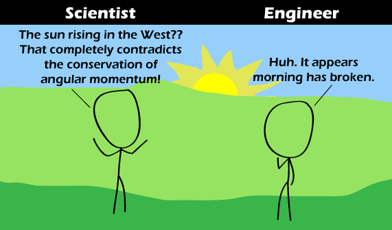

Comic JK 667
When I Feel Like It
⇤
<
?
>
⇥

⇤
<
?
>
⇥
Forum
.
RSS
.
Digg
.
Facebook
.
Reddit
.
Twitter
.
Stumbleupon
Enter your thoughts on number 667 here. Please, no spamming, trolling, or breaking important laws. Tell your mother to roll over. ...cue reference to XKCD? >Fat bottom girls make the world go round? That's not xkcd >>Fat Bottom Girls make the rockin' world go round-Queen >>>Could still be a reference to XKCD referencing Queen... >>>>Try XKCD #162 >>>>>one of the best. a classic >>>>>> Actually, it is a self reference. CJK once referenced XKCD#162 and Queen and said: "So it really is true. Fat bottomed girls make the world go round.". Eh, I'd probably suggest building rockets attached to the earth on opposite sides facing opposing directions to create a moment. Same effect, but doesn't use that fancy angular momentum stuff. Plus, you can stop when you've got it right. (And yeah, I'm (almost) an engineer (in training). >>little-known fact - the angular momentum of the Earth is greater than the total gravitational potential energy: in short, stopping the planet revolving would take more energy than smashing it ( whether by Death Star or Vogon Constructor Fleet... ) As a temporary workaround, we have redefined west as east. Please update your documentation accordingly. ><vader>pray I do not redefine it further</vader> n hemisphere. >> Actually, the magnetic north pole is at the south pole. The north pole of a magnet was defined as the pole that points north, so that means that the earth has a magnetic south pole at the north pole right now, since it attracts opposite poles. >>the last I read on such theories, the consensus was the historical record of polarity changes was too random to discern a predictable pattern... so "sometime soon" is probably "soon" in geological terms, not human terms... though I need to add the obligatory disclaimer: I am not a Terraformer >> similarly, the magnetic field changes. disclaimer: I am not a crook > Disclaimer: I am not a crook's head. > disclaimer: I am not a cook, either >> disclaimer: I am not a crook cook. >>Actually I heard the polarity shift was due some time next week. >>>no, that's the reversal of the polarity of the neutron flow... >>>>Yeah it should happen sometime in the next few hours. I hear its going to be a very abrupt change too. Anyone with any metal in their pockets will be thrown from the earth. Too prevent this make sure to throw any metal in your pockets in the air at precisely 4:36 pm eastern time. >>>>>It's 4:46 EST right now, did it happen?! WOOOOOOOOOOOOOO! Anyone else humming Cat Stevens all morning? > No, but now I have empty pockets. Oh, except for the rubber band I keep for 'security' Am I seriously the only one to catch the "At the break of dawn" thing? Aren't you all usually in full pun-hunting mode?